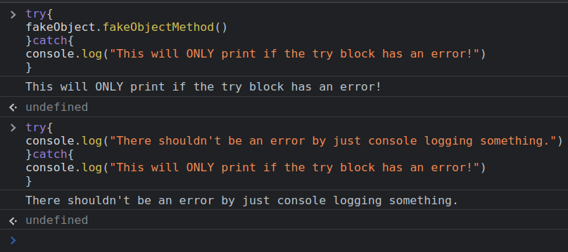
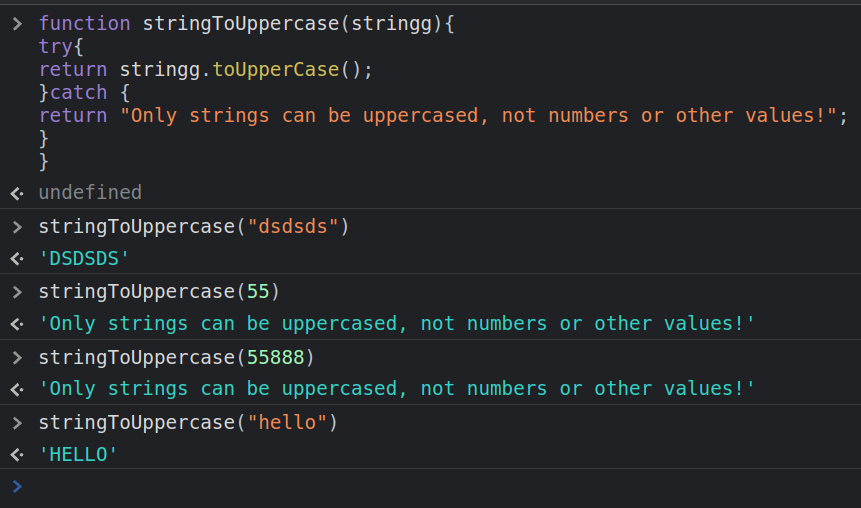

These are two statements that help us catch errors.
If we anticipate an error, we can crash the code to make sure it doesn't expand.
We can wrap our possibly bad code inside a catch with curly brackets surrounding the code itself.
We also need to use a catch statement, also with two curly brackets, where we will enter an alternate code, this code will only run if our try block actually returns an error.
Here is an example.
And another one.
